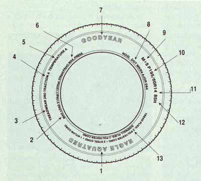
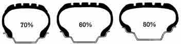
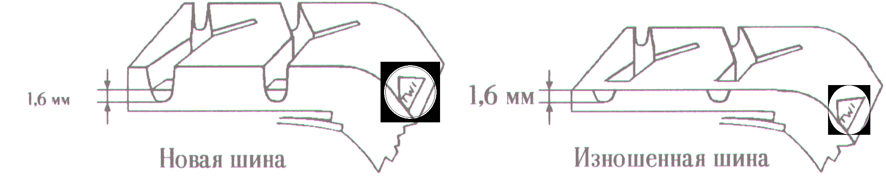
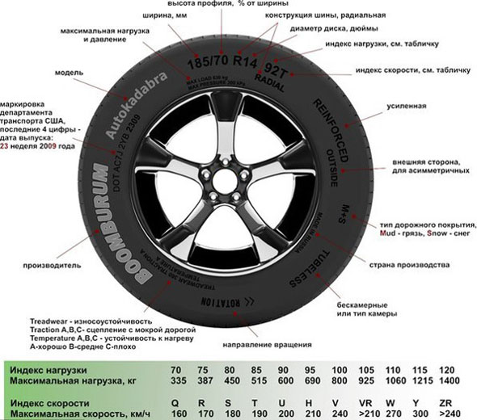

Места обозначений на шине
На шине возможны следующие обозначения:

1. Модель шины - у каждого производителя имеется свое наименование шин, которые должны сообщать покупателю об их особенностях. Для примера возьмем шины Bridgestone. Так модели BLIZZAK и ICE CRUISER - означает что они относятся к зимним шинам, причем вторая модель к премиум-сегменту. А, например, модель MY-02 означает, что это летняя шина и имеется выраженную спортивную направленность. Узнать о модельном ряде шин того или иного производителя - можно из рекламных буклетов или на официальном сайте компании.
2. Обозначение максимальной нагрузки. Некоторые фирмы его расшифровывают - пишут мелким шрифтом MAX LOAD (максимальная нагрузка) и далее указывают нагрузку в килограммах и английских фунтах (пример MAX LOAD 515kg (1135lbs), 1lbs=0,4536 кг). Считаю необходимым предостеречь от одного расхожего заблуждения. Некоторые водители считают достаточным умножить MAX LOAD на 4 (т.е. на количество колес машины), чтобы получить предельную массу автомобиля, которому подходят шины с данной нагрузкой. Так делать нельзя.
Во-первых, потому что полученная таким образом масса оказывается сильно завышенной. Шины не должны работать под предельной весовой нагрузкой. Поэтому от максимальной массы нужно отнять 20% ее величины - если у Вас легковая машина, или 30% - если у Вас внедорожник. Во-вторых, даже если Вы и отнимите нужные проценты, не факт, что и эта масса будет допустимой. Дело в том, что MAX LOAD - это предельная нагрузка для шины вообще, без привязки к особенностям конструкции конкретного автомобиля. А такая привязка обязательна.
Ведь есть автомобили, которые требуют "недогруженных" шин, а то и шин разной грузоподъемности на разных осях - это объясняется особенностями развесовки, управляемости и т.д. Бездумный, механический пересчет "теоретического" значения MAX LOAD ни к чему хорошему не приведет.
3-4-5 - отметка, требующаяся согласно нормативным документам об информировании потребителей (уровень качества); TREAD WEAR INDEX (TWI) - индекс износостойкости, TRACTION INDEX - индекс сцепных качеств; TEMPERATURE INDEX - температурный индекс.
6. Максимально допустимое давление воздуха - в шине, указывается в килопаскалях и фунтах на квадратный дюйм (пример 3.0 атм. (44psi), 1psi=0,0069 МПа для шины в "холодном" состоянии). Например, если на шине указано максимальное давление в 2,4 атм., то накачивать выше этого давления опасно. Также смотрите, какое должно быть рекомендуемое давление для шин.
7. Производитель - название фирмы разработчика и производителя шин.
8. Условное обозначение "DOT" - указывает на соответствие требованиям нормативных документов, касающихся шин.
9. Буквы "M+S" (Mud + Snow= грязь + снег) указывают на то, что шина рассчитана на эксплуатацию в зимних условиях или может использоваться при наличии грязи и снега.
WINTER (зима) - зимние шины, AQUATRED или AQUA CONTACT - дождевые шины, AS (All Seasons= все сезоны) или AW (Any Weather= любая погода) - всесезонные шины, пригодные к использованию на твердых дорогах в любое время года на любом, в том числе мокром и скользком, покрытии.
Кстати, в последнее время многие фирмы вместо этих надписей рисуют на боковинах шин рельефные пиктограммы - солнце, снежинку, дождик - иллюстрирующие все сезоны.
10. Обозначение размера шины (например 195/60R14) информирует:
Высота профиля представляет собой процентную величину высоты шины от ее ширины. Поясним на примере, маркировка 185/60 означает, что ширина шины 185 мм, а ее высота составляет 60% от ширины 185 мм, т.е. 185х60%=111 мм. Получается, ширина шины равна 111 мм. Так, математическим подсчетом, для шины 185/65 ширина составит 120 мм.

Если процентное содержание высоты шины меньше 60 или 50 процентов, то данная шина считается низкопрофильной.
Буква R означает радиальную "RADIAL" конструкцию шины и монтажный диаметр обода. Диаметр обода измеряется как в дюймах, так и в миллиметрах. При переводе надлежит считать 1 дюйм = 25,4 мм. Опять для примера, если мы рассмотрим маркировку шины типа R14, то это означает на 14-ый радиус, а радиальную конструкцию шины и ее диаметр 14 дюймов.
Если вы хотите заменить шины одного размера на другие, вам поможет данный калькулятор: сравнение размеров шин.
11. Индекс грузоподъемности - обозначает предельную весовую нагрузку, которую способна выдержать шина. Проставленное на шине двузначное число математически никак не привязано к конкретным килограммам - это просто условный индекс.
12. Категория скорости - условное обозначение скорости показывает максимальную расчетную скорость шины. В приводимой ниже таблице указывается эквивалентная максимальная скорость в км/ч. В старом обозначении шин условное обозначение скорости помещалось внутри обозначения размера на боковине (например 155SR13).
|
индекс |
P |
Q |
R |
S |
T |
U |
|
км/ч |
150 |
160 |
170 |
180 |
190 |
200 |
|
индекс |
H |
V |
VR |
W |
Y |
ZR |
|
км/ч |
210 |
240 |
>210 |
270 |
300 |
>240 |
Скоростная категория, присваиваемая шине по результатам специальных стендовых испытаний, подразумевает максимальную скорость, выдерживаемую шиной. То есть ту скорость, при малейшем превышении которой никто не может гарантировать, что шина не начнет разваливаться. А для эксплуатации устанавливается "щадящий" режим - Ваш автомобиль должен бегать со скоростью на 10-15% меньшей, нежели та, которую "допускают" шины.
13. Сведения о конструкции шины - особенности конструкции фиксируются на бортах соответствующими надписями о числе слоев брекера и каркаса, а также о материале корда.
Например надписи TREAD PLIES: 2 POLYESTER CORD+2 STEEL CORD+1 NYLON CORD означают, что брекер шины состоит из 2 слоев полиэстера + 2 слоев металлокорда + 1 слоя нейлонового корда, надпись SIDEWALL означает из скольких слоев состоит каркас (в частности , боковины), может встречаться также RAYON - вискозный корд.
14. Дополнительные сведения, имеющиеся на шинах
TWI - Tread wear indicator (индикатор износа протектора) - знак на боковине шины - показывает расположение отметок остаточной высоты рисунка в канавках протектора. Знак наносят по боковине у самого края протектора равномерно в шести местах по окружности с каждой стороны шины. Метка может представлять собой либо упомянутую выше аббревиатуру - TWI, либо TWI со стрелкой, либо просто стрелку без букв.

Индикатор износа протектора
Однако знак TWI - это лишь указатель места нахождения самого индикатора износа. Сам индикатор износа протектора надо искать на дне ближайшей к метке канавки протектора (если есть стрелка, она именно эту канавку и указывает). Там, присмотревшись, можно обнаружить резиновый выступ, его высота 1,6 мм от дна канавки - это и есть TWI. Он показывает предельно допустимую степень "облысения" шины.
Когда протектор сотрется до этого выступа - резину нужно менять в обязательном порядке. Когда остаточная высота рисунка протектора шины приближается к установленному минимальному значению, величина тормозного пути автомобиля при движении по мокрой дороге возрастает. С учетом этого становится важным рекомендовать своевременно осуществлять замену шин, причем лучше всего делать это до достижения отметки остаточной высоты рисунка протектора.
Во всех странах требуется, чтобы остаточная высота рисунка протектора шин для легковых автомобилей была равна не менее 1,6 мм.
Дата изготовления шины - показана 4-мя цифрами в овале на одной из сторон, причем первые две обозначают неделю изготовления, остальные - год изготовления (например 2309) - 23-я неделя 2009 года.
TUBELESS (бескамерная) - указывает на то, что шину надлежит использовать без камеры. Бескамерная шина отличается от камерной тем, что не требует надувной камеры.
TUBE TYPE - обозначение для камерных шин или ТТ.
PR (Ply rating) - прочность (несущая способность) каркаса условно оценивается так называемой нормой слойности (краткое описание конструкции каркаса). Для легковых автомобилей используют шины с нормой слойности 4PR и иногда 6PR, причем в этом случае последние имеют надпись Reinforced (усиленная) шина повышенной грузоподъемности.
Шины с маркировкой 6PR и 8PR (повышенной слойности) наиболее пригодны для легких грузовиков и микроавтобусов, поэтому часто после обозначения посадочного диаметра (например, 185R14C) на них ставится буква "С" (commercial).
Пример расшифровки маркировки шин

В настоящая время к основной маркировке шин автомобиля также прилагается новая маркировка, которая в первую очередь простая и ориентирована на покупателей шин. Дополнительно у каждой шины есть буклет, где указаны шумность шины, ее устойчивость на мокрой дороге и на твердой поверхности.